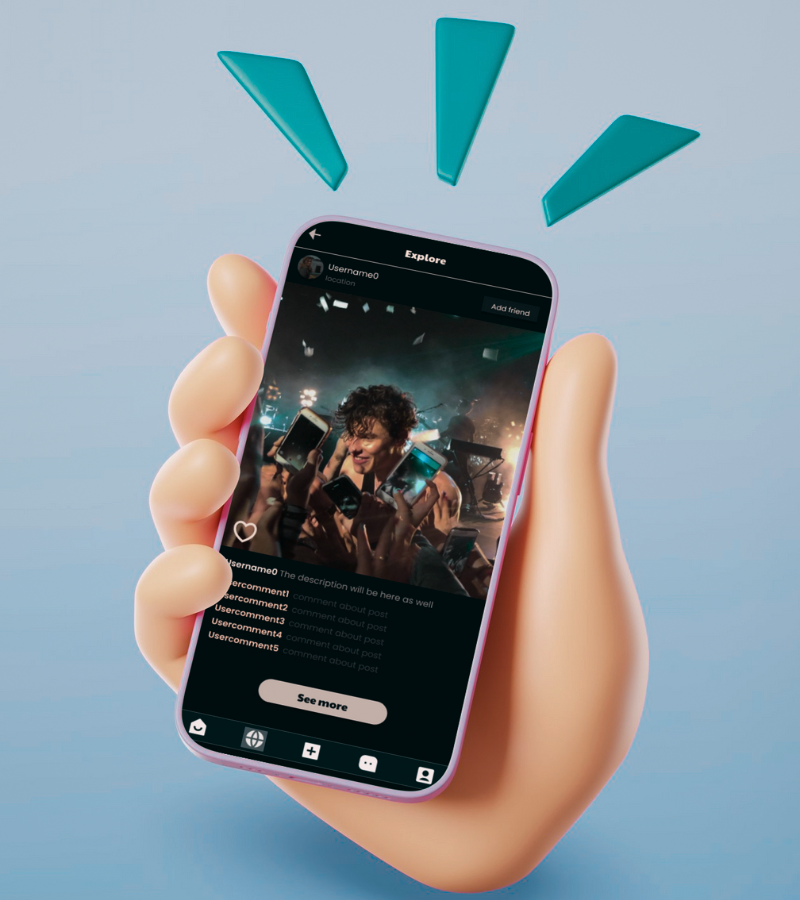

✎ Description: Kapris is a social media platform designed for fans to join and interact within various fanbases. It provides a safe space for fans to connect, share photos from concerts, post concept art, and fan edits, away from the negativity often found on other platforms.
㋡  Role: Lead Designer and Developer
⚙️Tools: Figma for design, HTML, CSS, JavaScript, React.js for front-end development